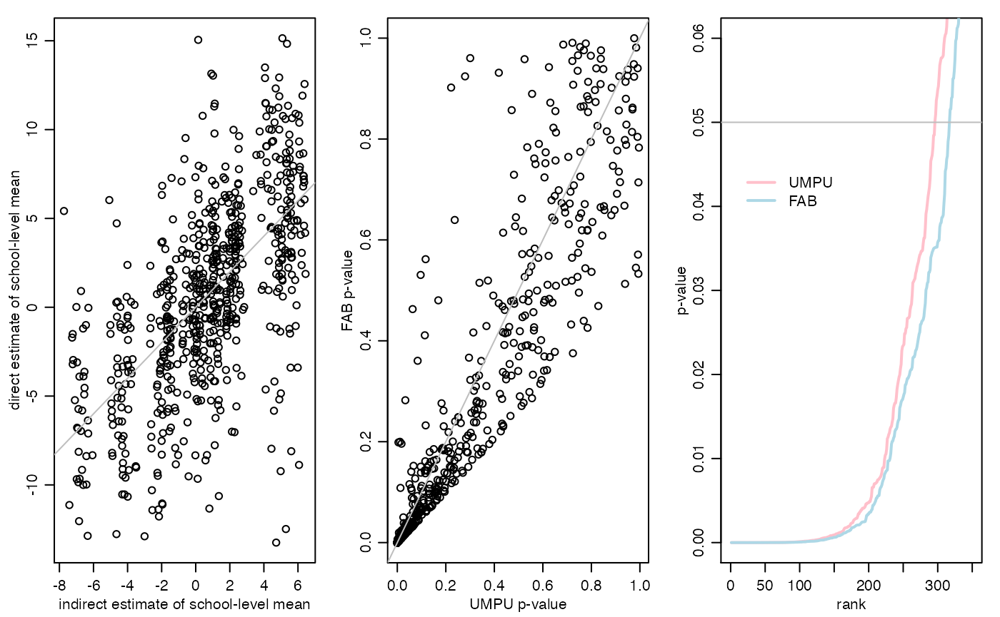

exampleFHmodel.RmdAdaptive FAB \(p\)-values are constructed for evaluating the mean test scores of 10th graders in a population of high schools. Information is shared across schools using a Fay-Herriot random effects model. This document serves as the replication code for the example in Section 3.2 of the article “Smaller \(p\)-values via indirect information” (Hoff 2019).
The data for this example are from the 2002 Educational Longitudinal Survey, data from which can be obained at https://nces.ed.gov/surveys/els2002/. A subset of the data needed to replicate the example is available on my website and can be loaded using the following command:
Now take a look at all the variables:
## school flp urbanicity sctrl enrollment region female ses nateng pared
## 1 1011 40.5 1 1 6 1 1 -0.23 1 5
## 2 1011 40.5 1 1 6 1 1 0.69 0 5
## 3 1011 40.5 1 1 6 1 1 -0.68 1 2
## 4 1011 40.5 1 1 6 1 1 -0.89 1 2
## 5 1011 40.5 1 1 6 1 1 -1.28 0 1
## 6 1011 40.5 1 1 6 1 0 -0.93 0 2
## 7 1011 40.5 1 1 6 1 0 0.36 1 6
## 8 1011 40.5 1 1 6 1 0 -0.24 1 2
## 9 1011 40.5 1 1 6 1 0 -0.85 1 2
## 10 1011 40.5 1 1 6 1 0 -1.07 1 1
## mscore rscore cscore rural suburban urban public catholic private rn rm rs
## 1 52.11 59.53 56.21 0 0 1 1 0 0 1 0 0
## 2 57.65 56.70 57.66 0 0 1 1 0 0 1 0 0
## 3 66.44 64.46 66.50 0 0 1 1 0 0 1 0 0
## 4 44.68 48.69 46.46 0 0 1 1 0 0 1 0 0
## 5 40.57 33.53 36.17 0 0 1 1 0 0 1 0 0
## 6 35.04 28.85 30.72 0 0 1 1 0 0 1 0 0
## 7 50.71 40.80 45.46 0 0 1 1 0 0 1 0 0
## 8 66.17 68.28 68.39 0 0 1 1 0 0 1 0 0
## 9 39.43 45.73 42.07 0 0 1 1 0 0 1 0 0
## 10 46.17 41.05 43.17 0 0 1 1 0 0 1 0 0
## rw pcgrad
## 1 0 0
## 2 0 0
## 3 0 0
## 4 0 0
## 5 0 0
## 6 0 0
## 7 0 1
## 8 0 0
## 9 0 0
## 10 0 0Separate out student-level characteristics from school-level characteristics:
y<-els$rscore
group<-els$school
groups<-sort(unique(group))
W<-as.matrix(els[,c("flp","urban","rural","private","catholic","rm","rs","rw","enrollment") ] )
X<-apply(W,2,function(x){ tapply(x,group,"mean") } ) Here, y is the student-level reading score, and group is the school id for each student. That is, group[i] is the school of student with score y[i]. The matrix X is a matrix of school-level variables, and the matrix W is the same data except with the variable for each school replicated for each student in the school.
Let \(\theta_j\) be the “true” mean test score in school \(j\). The standard two-sided \(p\)-value for testing \(H_j:\theta_j=50\) is based on the \(t\)-statistic \(t_j = \sqrt{n_j}( \bar y_j - 50)/\hat\sigma_j\).
To compute the FAB \(p\)-values, we need to first obtain indirect information about each \(\theta_j\) using data from schools other than school \(j\). We quantify this indirect information using the following linking model for school-specific means: \[
\theta_j = \beta^\top x_j + \tau \gamma_j
\] where \(\beta\) and \(\tau\) are unknown, \(x_j\) is a vector of observed characteristics of school \(j\), and \(\gamma_1,\ldots, \gamma_p \sim\) are i.i.d. standard normal random variables. For each school \(j\), we get an estimate of these parameters using the data from schools other than \(j\), along with an estimate of the within school sampling variance \(\sigma^2\). This is done using the lmer command in the lme4 package:
library(lme4)
BETA<-TAU<-SIGMA<-NULL
for(i in 1:length(groups)){
g<-groups[i]
iy<-y[group!=g]
iW<-W[group!=g,]
igroup<-group[group!=g]
ifit<-lmer(iy ~ iW + (1|igroup) )
beta<-fixef(ifit)
tau<-sqrt(unlist(VarCorr(ifit)))
sigma<-attr(VarCorr(ifit), "sc")
BETA<-rbind(BETA,beta)
TAU<-c(TAU,tau)
SIGMA<-c(SIGMA,sigma)
#cat(g,"\n")
}## Warning in checkConv(attr(opt, "derivs"), opt$par, ctrl = control$checkConv, :
## Model failed to converge with max|grad| = 0.0311113 (tol = 0.002, component 1)Note that the \(j\)th elements of BETA, TAU and SIGMA are estimated WITHOUT data from school \(j\), and so are independent of the data in school \(j\).
Based on these linking model parameter estimates we compute an indirect/prior mean \(\theta_j\): Given school-level covariates \(x_j\), the fitted predicted value for \(\theta_j\) based on the linking model is \(\hat\beta^\top x_j\):
Here we have centered things around the hypothesized mean value of \(\theta_0=50\).
The FAB \(p\)-value for school \(j\) is \(1-|F( T_j + \tilde b_j ) - F(-T_j)|\), where \(T_j\) is the \(t\) statistic for school \(j\), \(b_j = 2 \tilde \mu (\tilde \sigma/\sqrt{n_j})/\tilde\tau^2\), and \(F\) is the CDF of the appropriate \(T\)-distribution.
Save some results:
## [1] 316## [1] 295## [1] 0.7733918par(mfrow=c(1,3),mar=c(3,3,1,1),mgp=c(1.75,.75,0))
plot(resultsFHmodel$ETHETA,resultsFHmodel$YBAR,
xlab="indirect estimate of school-level mean",
ylab="direct estimate of school-level mean")
abline(0,1,col="gray")
pU<-resultsFHmodel$pU
pF<-resultsFHmodel$pF
plot(pU,pF,xlab="UMPU p-value",ylab="FAB p-value")
abline(0,1,col="gray")
plot(sort(pU),type="l",xlim=c(0,350),ylim=c(0,.06),lwd=2,col="pink",
xlab="rank",ylab="p-value")
lines(sort(pF),col="lightblue",lwd=2)
abline(h=.05,col="gray")
legend(5,.045,lwd=c(2,2),col=c("pink","lightblue"),legend=c("UMPU","FAB"),
bty="n")